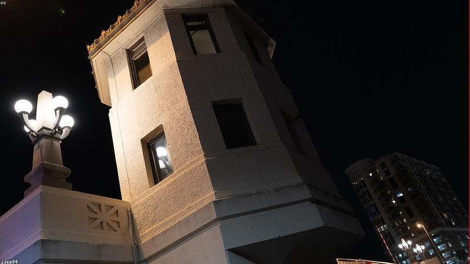

NO. 30 · 勵志
黑夜裡的提燈
你能點亮的，不只是自己。
社區停電那晚，獨居老人沒燈。鄰居小孩提著玩具燈跑來：『爺爺我陪你。』
一夜過去，老人說：『我不是怕黑，是怕一個人。』孩子不懂，卻懂留下。
後來那孩子長大去當護士，說啟發是那晚——『有人需要光，我就去提。』

社區停電那晚，獨居老人沒燈。鄰居小孩提著玩具燈跑來：『爺爺我陪你。』
一夜過去，老人說：『我不是怕黑，是怕一個人。』孩子不懂，卻懂留下。
後來那孩子長大去當護士，說啟發是那晚——『有人需要光，我就去提。』